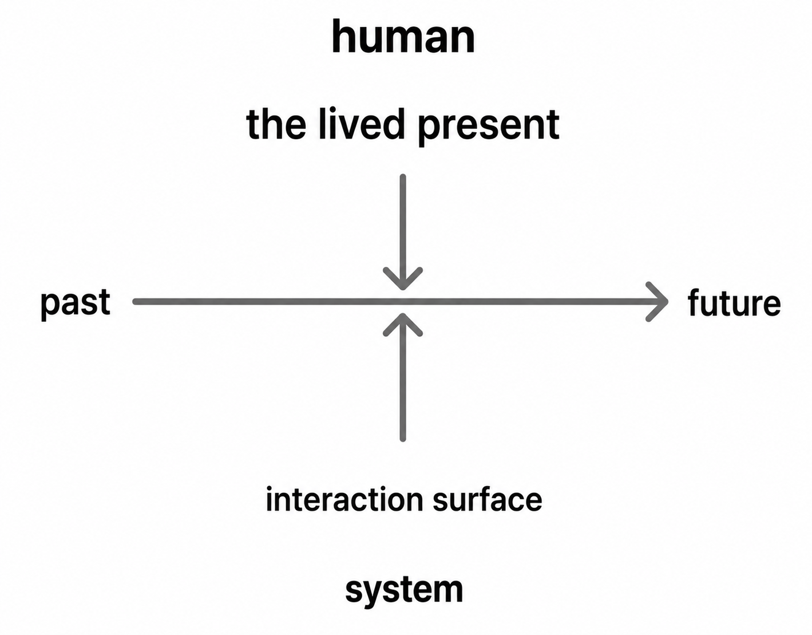
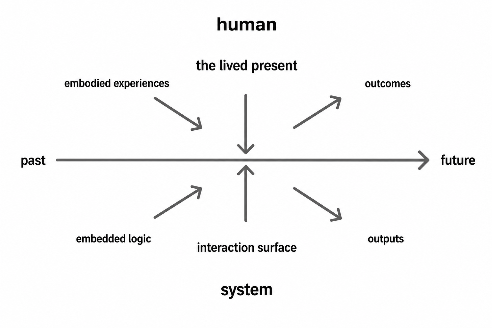

First Post: The Story That Wouldn’t Stay Simple
For most of my life, I thought about health in fairly straightforward terms.
Pay attention to your body. Exercise. Go to your annual checkups. If something feels wrong, get it checked out.
Not perfect control exactly, but close enough that cause and effect still mostly made sense.
Then my own experience with heart disease complicated that picture.
It started with something subtle: occasional shortness of breath during my bike commute to work. Not dramatic. Not consistent. Just enough to notice.
A couple months later, during a routine physical, I mentioned it almost casually. My doctor had a resident with her that day, and he suggested a treadmill stress test “just to be safe.”
I rode my bike to the hospital for the test.
I passed.
Then I got a call saying something in the results looked ambiguous and they wanted additional imaging.
That eventually led to a cardiac catheterization procedure that didn’t go as planned, followed by bypass surgery.
Years later, after another health scare, I found myself dealing not with a medical crisis but with an insurance authorization problem caused by a fax machine truncating multi-page submissions.
Those experiences didn’t feel connected at first.
One was about symptoms. Another about clinical judgment. Another about medical imaging. Another about administrative systems.
But over time, I started realizing they were all part of the same larger story.
Not a story about a single doctor, technology, or decision.
A story about humans and systems interacting over time.
The more I reflected on it, the more I found myself thinking about healthcare through two dimensions:
- human ↔ system
- past ↔ future
Very roughly:
- Humans bring experience, training, judgment, fears, and habits into the present moment.
- Systems bring workflows, representations, rules, and embedded logic into that same moment.
- Together, they shape future outcomes.
A simplified version looks something like this:

This framing has become increasingly important to me as I think about healthcare technology and AI.
AI is often discussed as though intelligence can simply be added to healthcare from the outside. But healthcare has never really worked as isolated intelligence. Outcomes emerge through interactions between people, systems, tools, and time.
Doctors vary. Patients vary. Systems fail in ordinary ways. Technologies surface some information while hiding other information.
And yet, most of the time, enough overlapping layers work together to keep people safe.
This series is an attempt to unpack those layers.
Over the next several posts, I’ll use my own experience with heart disease to explore:
- what humans bring into healthcare interactions
- what systems bring into them
- how future outcomes get shaped
- and how AI may change all of this
For now, I’ll leave you with the fuller version of the framework I’ve been working from.
